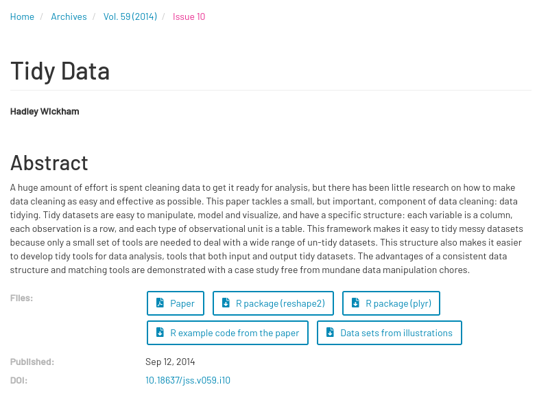

# A tibble: 5 × 58
country year new_sp_m014 new_sp_m1524 new_sp_m2534 new_sp_m3544 new_sp_m4554
<chr> <dbl> <dbl> <dbl> <dbl> <dbl> <dbl>
1 Afghani… 2001 129 379 349 274 204
2 Afghani… 2002 90 476 481 368 246
3 Afghani… 2003 127 511 436 284 256
4 Afghani… 2004 139 537 568 360 358
5 Afghani… 2005 151 606 560 472 453
# ℹ 51 more variables: new_sp_m5564 <dbl>, new_sp_m65 <dbl>, new_sp_f014 <dbl>,
# new_sp_f1524 <dbl>, new_sp_f2534 <dbl>, new_sp_f3544 <dbl>,
# new_sp_f4554 <dbl>, new_sp_f5564 <dbl>, new_sp_f65 <dbl>,
# new_sn_m014 <dbl>, new_sn_m1524 <dbl>, new_sn_m2534 <dbl>,
# new_sn_m3544 <dbl>, new_sn_m4554 <dbl>, new_sn_m5564 <dbl>,
# new_sn_m65 <dbl>, new_sn_f014 <dbl>, new_sn_f1524 <dbl>,
# new_sn_f2534 <dbl>, new_sn_f3544 <dbl>, new_sn_f4554 <dbl>, …Meetup 3: Tidy Data
George Hagstrom
2025-09-08
Questions from last week
- Which graph for which data?
- How to troubleshoot?
- Search on google/stackoverflow
- LLMs are amazing for this
?function_call, Healy: How to read a help page
Event!
- We are having a department wide, online event tomorrow at 7PM!
- Meet and chat with the program director, your professors, and other students
- https://us02web.zoom.us/j/2994528670?omn=85792887090
What to do this Week
Read:
- RDS (R for Data Science): Chapters 5-7
- tidyr pivot vignette
- Tidy Data. Hadley Wickham. Journal of statistical software 59 (2014): 1-23.
- tidyr vignette
What to do this Week
Homework:
Helpful tutorial:
What to do this Week
Watch (alternative to my lectures):
Unstructured Data
Need to reinvent wheel every time to analyze:
Tidy Data (Rebranded Data Matrix?)
- Columns are variables
- Rows are observations
- One value per cell

Fig 5.1 from R4DS
Example
Untidy:
Tidy:
# A tibble: 7 × 6
country year diagnosis gender age count
<chr> <dbl> <chr> <chr> <chr> <dbl>
1 Afghanistan 2001 sp m 014 129
2 Afghanistan 2001 sp m 1524 379
3 Afghanistan 2001 sp m 2534 349
4 Afghanistan 2001 sp m 3544 274
5 Afghanistan 2001 sp m 4554 204
6 Afghanistan 2001 sp m 5564 139
7 Afghanistan 2001 sp m 65 103Why Does the TidyVerse Work?
Tidyverse functions:
- Take tidy data as input
- Return tidy data as output
- Can freely chain together functions
Tidyverse is successful because it insists on the tidy format and because it is designed around it. Other ecosystems (base R, pandas, etc) don’t always return tidy output from tidy input.
Originated from Relational Databases
Original Tidy Data Def:
- Columns are variables
- Rows are observations
- One observational unit per table

If you have studied relational databases you might recognize Codd’s 3rd normal form.
New Versus Old Tidy
New Tidy- repeats a lot of data on songs but easier to analyze because of flat structure
New Versus Old Tidy
Old tidy: Space efficient like a database
Wide Data
- All data corresponding to a single observational unit in a single row
- Values of First Column unique
- Easy to process visually
- Some software works better with wide data
| track | wk1 | wk2 | wk3 | wk4 | wk5 | wk6 | wk7 | wk8 | wk9 | wk10 |
|---|---|---|---|---|---|---|---|---|---|---|
| Baby Don’t Cry (Keep… | 87 | 82 | 72 | 77 | 87 | 94 | 99 | NA | NA | NA |
| The Hardest Part Of … | 91 | 87 | 92 | NA | NA | NA | NA | NA | NA | NA |
| Kryptonite | 81 | 70 | 68 | 67 | 66 | 57 | 54 | 53 | 51 | 51 |
| Loser | 76 | 76 | 72 | 69 | 67 | 65 | 55 | 59 | 62 | 61 |
| Wobble Wobble | 57 | 34 | 25 | 17 | 17 | 31 | 36 | 49 | 53 | 57 |
Tall Data
- First column values repeat
- Works well with software like R
- Harder to process visually
- Tidy data typically Tall
| track | Week | Rank |
|---|---|---|
| Baby Don’t Cry (Keep… | 1 | 87 |
| Baby Don’t Cry (Keep… | 2 | 82 |
| Baby Don’t Cry (Keep… | 3 | 72 |
| Baby Don’t Cry (Keep… | 4 | 77 |
| Baby Don’t Cry (Keep… | 5 | 87 |
| Baby Don’t Cry (Keep… | 6 | 94 |
| Baby Don’t Cry (Keep… | 7 | 99 |
| The Hardest Part Of … | 1 | 91 |
Tall and wide can contain the same info, distinction between them is not always completely precise.
Pivot Longer
| id | bp1 | bp2 |
|---|---|---|
| A | 100 | 120 |
| B | 140 | 115 |
| C | 120 | 125 |
| id | measurement | value |
|---|---|---|
| A | bp1 | 100 |
| A | bp2 | 120 |
| B | bp1 | 140 |
| B | bp2 | 115 |
| C | bp1 | 120 |
| C | bp2 | 125 |
Pivot Longer
# A tibble: 6 × 3
id measurement value
<chr> <chr> <dbl>
1 A bp1 100
2 A bp2 120
3 B bp1 140
4 B bp2 115
5 C bp1 120
6 C bp2 125Pivot Longer

R4DS 5.3
Pivot Longer

R4DS 5.4
Pivot Longer

R4DS 5.5
Pivot Wider
- Select column for names and column for values
- Distinct values in column become new column headers
- Values get mapped from other column
- Potential for
NAvalues…..
| id | measurement | value |
|---|---|---|
| A | bp1 | 100 |
| A | bp1 | 102 |
| B | bp2 | 120 |
| B | bp2 | 140 |
| A | bp3 | 115 |
Pivot Wider
| id | meas | val |
|---|---|---|
| A | bp1 | 100 |
| B | bp1 | 102 |
| B | bp2 | 120 |
| A | bp2 | 140 |
| A | bp3 | 115 |
| id | bp1 | bp2 | bp3 |
|---|---|---|---|
| A | 100 | 140 | 115 |
| B | 102 | 120 | NA |
Pivot Wider: Non-unique values
| id | meas | val |
|---|---|---|
| A | bp1 | 100 |
| B | bp1 | 102 |
| B | bp2 | 120 |
| A | bp2 | 140 |
| A | bp2 | 115 |
| id | bp1 | bp2 |
|---|---|---|
| A | 100 | 140, 115 |
| B | 102 | 120 |
Pivot Wider: Multiple Rows
| id | meas | val | time |
|---|---|---|---|
| A | bp1 | 100 | day |
| B | bp1 | 102 | night |
| B | bp2 | 120 | night |
| A | bp2 | 140 | day |
| A | bp3 | 115 | morning |
| id | time | bp1 | bp2 | bp3 |
|---|---|---|---|---|
| A | day | 100 | 140 | NA |
| B | night | 102 | 120 | NA |
| A | morning | NA | NA | 115 |
When to use each pivot
pivot_longertidies data where variables and/or data are in the column names
| country | year | sp_m_014 | sp_m_1524 | sp_m_2534 | sp_m_3544 | sp_m_4554 |
|---|---|---|---|---|---|---|
| Afghanistan | 1980 | NA | NA | NA | NA | NA |
| Afghanistan | 1981 | NA | NA | NA | NA | NA |
| Afghanistan | 1982 | NA | NA | NA | NA | NA |
| Afghanistan | 1983 | NA | NA | NA | NA | NA |
| Afghanistan | 1984 | NA | NA | NA | NA | NA |
When to use each pivot
pivot_widertidies data where measurements are spread across multiple rows
| station | date | measure | value |
|---|---|---|---|
| 1 | 2024/09/01 | temp | 25.0 C |
| 1 | 2024/09/01 | pressure | 700mmHg |
| 1 | 2024/09/01 | humidity | 60% |
| 1 | 2024/09/01 | rain | .2in |
| 1 | 2024/09/02 | temp | 22.0 C |
| 1 | 2024/09/02 | pressure | 800mmHg |
| 1 | 2024/09/02 | humidity | 40% |
Weather Station Vignette
Follow along:
Tidy Data Defined Based on Your Goals
Definition of “variable” and “measurement” is partially up to you!
Pick the definitions that are best suited for you analysis
Data Science in Context Presentation
Meetup Reflection/One Minute Paper
Please fill out the following google form after the meeting or watching the video:
DATA 607